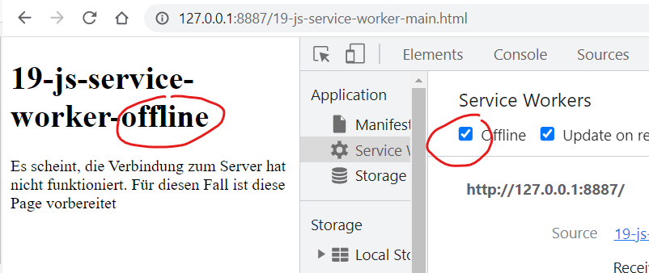
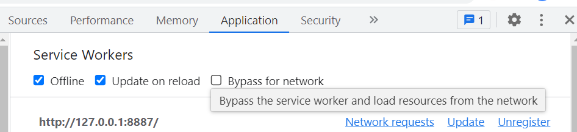

SZENARIO: bei Offline, wird nicht die Offline-Seite vom Browser 'Kein Internet', sondern die von uns vorbereitete Seite angezeigt.
Wichtig dabei, KEIN Häckchen bei 'Umgehen für Netzwerk' oder 'Bypass for network' gesetzt zu haben. Wenn die Option aktiviert ist, wird der Service Worker ignoriert, was wir nicht wollen.
